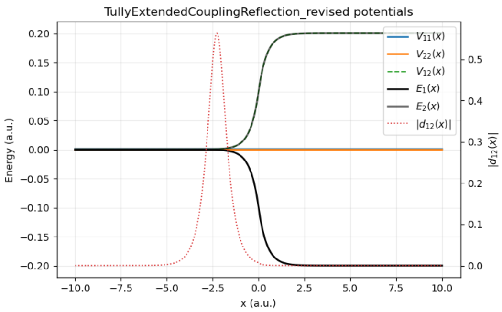
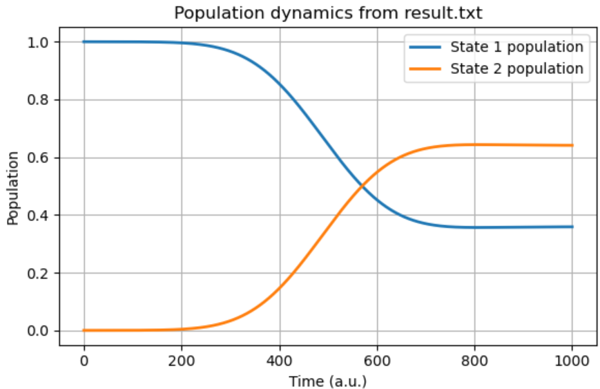
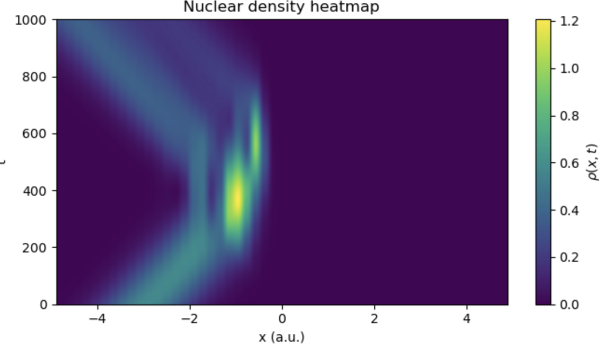
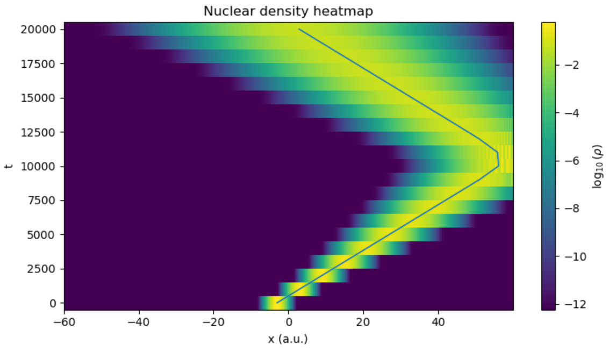

DVR Series - Part III
Wavepacket Dynamics with DVR
After the DVR Hamiltonian is built, the next step is a real-time wavepacket calculation. The initial state is a Gaussian nuclear packet placed on one electronic state, then propagated by the full product-basis Hamiltonian.
What the propagation is
The calculation is not an iterative DVR solver for the Schrodinger equation. DVR first turns the continuous coordinate problem into one finite Hamiltonian matrix. For the time-independent models here, the evolution at any requested time is then evaluated directly from the spectral decomposition of that matrix:
Loops in the plotting code are therefore loops over requested output times. They are not Euler, Runge-Kutta, or finite-difference time steps approximating the time derivative.
Product basis
For \(N_x\) DVR grid points and \(n_{\mathrm{state}}\) electronic states, the working basis is
The Hamiltonian has the same block form as in the previous note:
The diabatic potential \(V(x_i)\) is evaluated independently at every grid point. Local adiabatic surfaces are obtained by diagonalizing this \(n_{\mathrm{state}}\times n_{\mathrm{state}}\) matrix at each \(x_i\).
Initial Gaussian packet
The nuclear part of the initial wavefunction is
where \(x_0\) fixes the packet center, \(k_0\) fixes the mean momentum, and \(\sigma\) controls the spatial width. On the DVR grid it becomes a vector, normalized by
If the packet is prepared on the lower local adiabatic state, the source notes transform it into the diabatic product basis before propagation.
Potential model and state populations


Propagation by spectral decomposition
For a time-independent Hamiltonian, the finite-dimensional evolution is
After diagonalizing \(H=C\,\mathrm{diag}(E_\alpha)C^\dagger\), this becomes
Electronic-state populations are then simple sums over grid points:
Within the chosen finite basis, this spectral propagation is exact up to diagonalization and floating-point roundoff. The approximation enters earlier: in the finite coordinate basis, the box size, the grid spacing, and the potential model.
Density heatmaps


From wavepackets to ensembles
The single-packet calculation prepares a pure state. Part IV keeps the same finite Hamiltonian idea but replaces \(\psi(t)\) with a density matrix \(\rho(t)\), which makes thermal ensembles and incoming momentum filters natural.
Code used in this note
- dvr_kubo_minimal.py includes the two-state Tully Hamiltonian constructor, Gaussian packet initializer, and spectral propagation routine used for this note.
- source/README.md describes the cleaned code attachments and what was kept out of the published site.